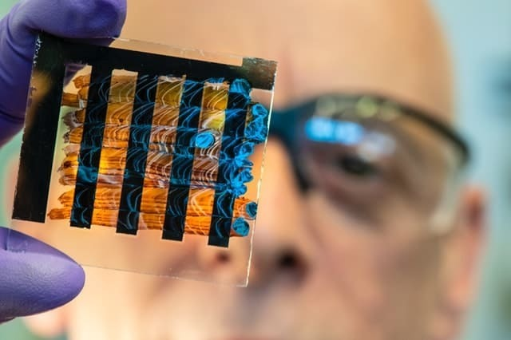
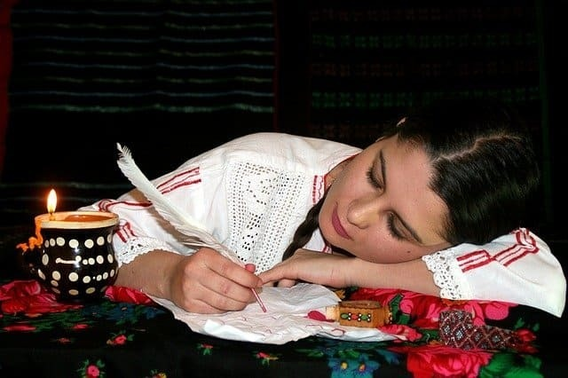
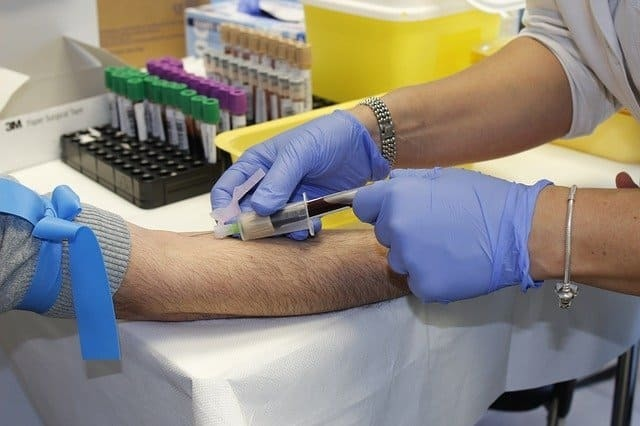

真性多血症の鍼灸
JAK2遺伝子変異等で赤血球が過剰産生され血液粘度が高まる骨髄増殖性腫瘍です。専門医での血栓予防を最優先とし、安定期のみ補完ケアを行います。
まず知っておきたい要点と改善の流れ
真性多血症は、年間10万人に約2人の中高年に多い骨髄増殖性腫瘍の一つです。多くでJAK2遺伝子変異（V617F等）により造血細胞が異常増殖し、赤血球を中心に血球が過剰産生されて血液粘度が高まります。心筋梗塞・脳卒中・深部静脈血栓症・肺塞栓症などの血栓症や出血傾向、さらに骨髄線維症や急性白血病への移行リスクがあるため、静脈瀉血・低用量アスピリン・ヒドロキシカルバミド・インターフェロンα・JAK2阻害薬など専門医の継続管理が不可欠です。（公式解説）
このようなお悩みはありませんか？
- ✓頭痛やめまい・疲労感・顔のほてりや赤みが続いている
- ✓入浴後（温水後）に全身の皮膚が強くかゆくなることがある
- ✓左上腹部の張りや不快感（脾腫）や、出血しやすさを指摘されている
- ✓瀉血や薬物療法で血栓予防を続けながら日常の不調を整えたい
当院の施術アプローチ・改善の流れ
なぜ鍼灸で改善へ向かうのか？（作用機序の図解）
真性多血症に対する鍼灸は、心拍変動・血管トーンを整える自律神経サポート機序を通じて、お体本来の回復力を引き出します。

循環器専門医の標準治療を絶対前提とし、手首や背部の安全な経穴へ低刺激でアプローチします。
心臓への過剰な交感神経刺激を穏やかに鎮め、心拍リズムと血管緊張の急変を抑えます。
ストレスで固まりやすい胸郭や横隔膜の緊張を解き、酸素摂取とリラックス反応を促します。
内服管理を厳守しながら、疲労やストレスが引き金となる症状不安の軽減を支えます。
院長YouTube解説・関連動画
真性多血症は造血細胞に異常が起きることによって起きる

真性多血症は造血細胞に異常が起きることによって起きます。造血細胞が何らかの理由があって傷つくと、エリスロポエチンによる調節ができなくなり、赤血球が過剰に生産されるようになるのです。
なぜ造血細胞に異常が起きるのかという原因についてはわかっていないため、真性多血症が起きる原因についてはわかっていません。
真性多血症は、赤血球が過剰に生産される一種の骨髄の病気です。この病気の起源となる原因は、特定の遺伝子変異が関与していることが明らかになっています。
JAK2遺伝子変異: 真性多血症の最も一般的な原因は、JAK2（Janus Kinase 2）と呼ばれる遺伝子の変異です。この遺伝子は、骨髄における赤血球の生産を調節する役割を果たしています。この遺伝子の特定の変異（通常はV617Fと呼ばれる）は、骨髄の細胞が常に成長と分裂の信号を受け取るようになり、その結果、赤血球が過剰に生産されるという状況を引き起こします。これにより、血液が濃くなり、血流が遅くなり、血栓が形成されるリスクが高まります。
遺伝的または家族的要素: 真性多血症は通常、ランダムな突然変異の結果として発生します。これは、個人が生まれるときに既に存在する変異ではなく、生涯を通じて獲得される変異を指します。しかし、病気の発生には家族歴が一部関与している可能性があり、PVが家族間で発生する傾向があることが報告されています。
年齢: 真性多血症の発症は、年齢とともに高まる傾向があります。多くの場合、60歳以上の人々に判断されます。しかし、若年者でも発症することは可能です。
性別: 男性は女性よりも真性多血症を発症するリスクが高いとされています。しかし、その理由についてははっきりしていません。
真性多血症の原因についてはまだ完全には理解されていませんが、これらの要素はその発症を促進する主要な要因とされています。最終的には、これらの要因の組み合わせが一人一人の真性多血症の発症と進行を形成します。
一部では、JAK2遺伝子変異の他にもMPLやCALRといった他の遺伝子変異が見られることがあります。これらの変異もまた、骨髄の細胞が過剰に成長することを促進する役割を果たします。したがって、複数の遺伝子変異が同時に存在する場合、病状の進行がさらに加速する可能性があります。
また、真性多血症は、他の骨髄の病気、特に骨髄線維症や急性骨髄性白血病への進行を引き起こす可能性があります。これは、JAK2変異が持続的に活性化されることにより、骨髄の細胞が継続的に成長し、結果的に骨髄が異常に増殖したり、正常な造血を妨げたりするためです。
真性多血症の症状は疲労感やふらつきや息切れ、血流の低下など

真性多血症の症状は疲労感や脱力感、ふらつきや息切れなどです。場合によっては特に目立つ症状はないこともあります。
しかし、病気が進み、血液の中の赤血球が増えると血液の粘度が上がります。そのため、病気が進むと血流が低下したり、血栓ができやすくなったりします。
血流の低下は、頭痛やめまい、視力障害、顔面の紅潮などを引き起こすこともあります。さらに、脳梗塞や心筋梗塞、肺梗塞などの血栓症が起きることもあります。
血流が低下すると、集中力の低下にもつながると言われています。そのため、日常生活に影響が出ることも多いです。仕事などで集中力が低下すると、効率よく働くことができないだけでなく、怪我などにもつながるため注意が必要です。
真性多血症は、赤血球が過剰に生産されることで血液が濃くなり、さまざまな症状を引き起こす血液の病気です。真性多血症の初期症状は、一般的に非特異的で、他の病気と間違われることがあります。以下に、真性多血症の主要な症状について詳しく説明します。
疲労: この病気では、普段以上に疲れやすく感じることがよくあります。これは赤血球の過剰な生産が血液の粘度を高め、血流を悪化させるためです。この結果、体の各部に必要な酸素が十分に運ばれず、疲労感を引き起こす可能性があります。
頭痛やめまい: 真性多血症は、頭痛、めまい、視覚障害など、さまざまな神経学的症状を引き起こす可能性があります。これらの症状は、血液の粘度が高まることで脳への血流が制限され、脳組織が必要な酸素を得られなくなるために起こります。
ほてりと赤面: これは、血液が体内を流れる速度が遅くなることで皮膚表面の血管が拡張し、特に顔が赤くなることを指します。これは特に暖房の効いた部屋や暖かい環境で顕著になります。
腹部の不快感: 真性多血症では、脾臓の拡大により腹部が膨れ、食事後の早い満腹感や左上腹部の不快感を経験することがあります。
血栓形成: 真性多血症の最も重大な合併症は血栓形成であり、深部静脈血栓症（DVT）、肺塞栓症、心筋梗塞、脳卒中などの原因となる可能性があります。これらは血液が濃くなり、血流が遅くなることによります。血栓形成のリスクは、他の危険因子（たとえば喫煙、肥満、高血圧など）が存在する場合、さらに高まります。
皮膚かゆみ: 特に温水に触れた後に皮膚がかゆくなることは、真性多血症の特徴的な症状の1つです。これは、過剰な赤血球によって血液中のヒスタミンのレベルが高まることにより引き起こされます。
骨の痛み: 一部では、骨髄の過剰な活動により骨の痛みを感じることがあります。これは特に肋骨や骨盤の領域で感じられることが多いです。
無気力や集中力の低下: 真性多血症では、疲労に加えて、全般的な無気力や集中力の低下を経験することがあります。これは、血液の粘度が上昇し、脳への酸素供給が適切でないために起こります。
高血圧: 過剰な赤血球の生産により、血液の粘度が高まると、心臓は血液を体全体に送り出すためにより多くの力を必要とします。これが持続すると、高血圧を引き起こす可能性があります。
出血と出血傾向: 血液が濃くなると、血液の凝固能力が変化し、出血や出血傾向が見られることがあります。これは鼻血、歯肉出血、皮下出血など、さまざまな形で現れます。

真性多血症の改善の目標は、血栓症を予防することです。過去に血栓症になったことがある人と60歳以上の人は血栓症になる危険性の高い人です。どちらか1つだけでも当てはまる場合は、血栓症になるリスクが高いということになります。
過去に血栓症になったことがなく60歳以下の場合は血栓症になる危険性は低いといえます。
血栓ができるリスクの高い病気を持っている場合は持っている病気の改善にきちんと取り組むことが大切です。血栓症になる可能性が低い場合は、血液中の赤血球の量を抑えるために血液を抜く方法とアスピリンを使って改善を行います。
血栓症になる可能性の高い場合は、血液中の赤血球の量を抑えるために血液を抜く方法とアスピリンを使う方法と合わせてヒドロキシカルバミドという薬を使って、赤血球の産生を抑える方法で改善を行います。
真性多血症は、骨髄が過剰に赤血球を生産することで起こる慢性的な血液の病気であり、病気の進行や年齢、症状、一般的な健康状態により、改善法は異なります。
静脈瀉血（血液の除去）: 静脈瀉血は、PVの初期の改善方法の一部として一般的に行われます。この手法は、過剰に生産された血液を直接除去することで血液の粘度を下げ、症状を緩和し、血栓形成のリスクを減らすことを目的としています。最初の静脈瀉血の後、医師は定期的に血液を取り出すスケジュールを決定し、血液の粘度が適切なレベルに保たれるようにします。
低用量アスピリン: PVでは、血栓形成のリスクが高いため、低用量のアスピリンが日常的に処方されることがあります。これは血液の凝固を防ぎ、血栓症のリスクを軽減します。ただし、出血のリスクが高い場合は適用されません。
抗凝固薬: 一部では（特に以前に血栓症を経験した場合）抗凝固薬が処方されることがあります。これらの薬は血液の凝固を抑制し、新たな血栓の形成を防ぎます。
ヒドロキシウレア: ヒドロキシウレアは、赤血球の生産を抑制する抗がん薬で、PVの改善に一般的に使用されます。この薬は、血液の粘度を下げ、血栓のリスクを減らします。しかし、一部ではこの薬に対して耐性を示すか、副作用により使用できない場合があります。
インターフェロンα: インターフェロンαは、特に妊娠を希望する女性や若い人に対して有用な改善方法の選択肢です。この薬は免疫系を調節し、赤血球の生産を制御します。副作用として、インフルエンザ様症状や慢性疲労感などが見られますが、これらは通常、投与量の調節や補助的な方法で管理できます。
ロペガインターフェロンα-2b: ロペガインターフェロンα-2bは新しいタイプのインターフェロンで、少ない副作用で長期的な効果を持つことから、PVの改善方法において有望な選択肢とされています。
ルキセリチニブ: この薬はJAK2阻害剤と呼ばれ、JAK2遺伝子変異により引き起こされる過剰な赤血球の生産を抑制します。これは、特にヒドロキシウレアに耐性を示すか副作用により使用できない場合に有用です。
以上が真性多血症の主な改善法です。それぞれの改善法は、状態、症状、リスク、生活状況などにより選択され、しばしば組み合わせて使用されます。また、改善の目的は、症状の改善、血栓形成のリスク軽減、病状進行の遅延、そして生活の質の向上です。
真性多血症は、骨髄線維症や白血病、心筋梗塞や脳卒中などの合併症を引き起こすこともあります。
特に心筋梗塞や脳卒中には注意が必要です。心筋梗塞や脳卒中は、動脈に血栓が詰まることによって起きます。真性多血症では血栓ができやすくなります。そのため、心筋梗塞や脳卒中が起きやすいのです。
心筋梗塞や脳卒中を起こすことが真性多血症で亡くなってしまう主な原因と言われています。真性多血症では、血栓を予防することが非常に大切なのです。
循環器・動悸・高血圧・心不全補助の全身ツボ図解
実際の施術ではお一人おひとりの体質・症状に合わせて選穴しますが、動悸・不整脈・本態性高血圧・慢性心不全の循環器治療併用サポートの臨床でよく用いられる代表的なツボの目安です。

📌 代表的なツボの詳細一覧表を開く（6穴） ▼
| ツボ名 | 位置の目安 | 主な狙い | セルフケアの注意点 |
|---|---|---|---|
| 内関（ないかん） | 手首の横ジワから指3本分肘寄りの中央 | 動悸・不整脈・狭心症補助で最も研究されている心包経の要穴 | 胸痛・冷や汗・失神がある場合は直ちに救急受診してください。 |
| 膻中（だんちゅう） | 胸の中央（胸骨上） | 胸のつかえ・交感神経の高ぶり・不安感の鎮静 | 強く押さず手のひらで温めながら深呼吸します。 |
| 神門（しんもん） | 手首の横ジワの小指側のくぼみ | 心拍の落ち着き・緊張性の動悸と不眠ケア | ペースメーカー使用時は電気鍼を避け手技のみで行います。 |
| 曲池（きょくち） | 肘を曲げた外側のシワの先端 | 血圧変動に伴う上肢・頭部の緊張緩和 | 降圧薬・心不全薬の自己判断での中止は厳禁です。 |
| 足三里（あしさんり） | 膝の下外側、指4本分下 | 末梢循環・自律神経バランスとQOL維持 | 身体負担の少ない穏やかな低刺激で行います。 |
| 太衝（たいしょう） | 足の甲、親指と人差し指の骨の間 | ストレス性の血圧上昇・末梢血管収縮の緩和 | 就寝前の優しい指圧でリラックスを促します。 |
国際査読論文の科学的エビデンス
国際的な医学データベース（PubMed・Cochrane等）で報告されている動悸・不整脈・本態性高血圧・慢性心不全の循環器治療併用サポート領域の代表的な査読済み鍼灸研究をまとめています（標準治療との併用や研究上の限界を含めて正確に掲載）。
📚 査読論文データ・PubMed出典リンクを開く（4件） ▼
| 年・研究デザイン | 対象・規模 | 主な結果 | 限界・出典 |
|---|---|---|---|
| 2019年 大規模多施設RCT | 慢性安定狭心症 398名解析（標準薬物療法併用） | 16週時点の4週間発作減少は実鍼群がシャム群比5.18回・待機群比5.63回多く有意改善（P<0.001）。 | 標準薬物療法への併用（補完）試験であり単独療法ではない。 JAMA Intern Med (PMID: 31355870) |
| 2007年 シャム対照RCT | 本態性高血圧 140名完了（ドイツ・24時間ABPM） | 治療終了時の24時間血圧はシャム比SBP -6.4mmHg・DBP -3.7mmHg有意低下（P<0.001）。 | 終了3〜6か月で治療前水準へ戻るため継続ケアが必要。 Circulation (PMID: 17548730) |
| 2015年 メタ解析 | 高血圧 23 RCTs（n=1,788） | 降圧薬＋実鍼は降圧薬＋シャム比でSBP -7.47mmHg・DBP -4.22mmHg有意低下。鍼単独は降圧薬と同等・根拠不十分。 | 盲検化・異質性に課題。降圧薬の自己中断は厳禁。 PLoS One (PMID: 26207806) |
| 2025年 メタ解析 | 心拍変動（HRV）10 RCTs（n=744） | 自律神経全体の適応指標SDNNを有意に改善、重篤な有害事象なし。 | LF・HFには不確実性が高くさらなる検証が必要。 Front Neurosci (PMID: 41230507) |
参考文献・出典
- 銀座そうぜん鍼灸院「真性多血症の公式解説ページ」
- 2019年 大規模多施設RCT（慢性安定狭心症 398名解析（標準薬物療法併用））— JAMA Intern Med (PMID: 31355870)
- 2007年 シャム対照RCT（本態性高血圧 140名完了（ドイツ・24時間ABPM））— Circulation (PMID: 17548730)
- 2015年 メタ解析（高血圧 23 RCTs（n=1,788））— PLoS One (PMID: 26207806)
- 2025年 メタ解析（心拍変動（HRV）10 RCTs（n=744））— Front Neurosci (PMID: 41230507)
よくある質問（FAQ）
Q. 低用量アスピリンなどの薬を飲んでいても鍼灸を受けられますか？▼
Q. 入浴後に皮膚がかゆくなるのはなぜですか？▼
あわせて読まれる関連疾患（循環器のお悩み）
体内に鉄が過剰に蓄積し、酸化ストレスで肝臓や心臓などの臓器を障害する疾患です。専門医治療を最優先とし、安定期の体調管理を支えます。
首の骨の中を通る椎骨動脈の内膜が裂ける重篤な血管疾患です。突然の頭痛は即救急受診が必須で、首への施術や操作は絶対禁忌です。
夜間や安静時に心室細動を起こし得る遺伝性不整脈疾患です。循環器専門医での厳重な管理を最優先に、安定期のストレス管理を支援します。
おへそが飛び出し腸管などが脱出する状態です。激しい痛みや戻らない膨らみは緊急受診が必須、安定期の腹圧対策等を補完支援します。
動脈血中の酸素が不足した状態です。医療機関での酸素投与と原因疾患の治療を最優先に、安定期の呼吸環境や疲労感をサポートします。
水分の過剰摂取で血液のナトリウム濃度が急低下する危険な状態です。急性期は救急対応が最優先で、安定期のストレス管理を支援します。
おひとりで悩まず、まずはご相談ください
銀座本院・川口・大宮・横浜・博多・田無の各院でご予約を承っております。